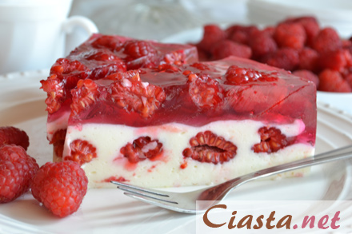

Sernik na zimno z truskawkami
Wyśmienity sernik na zimno z malinami i galaretką malinową.
Nie wiesz jak przygotować taki sernik? Zobacz prosty przepis, a przekonasz
się jak łatwo i szybko można przygotować orzeźwiający i kuszący kolorami
sernik bez pieczenia z pysznymi malinami. Porcja na tortownicę o średnicy 24 cm.
Sernik jest rewelacyjny, dlatego bardzo szybko znika z talerza. Polecam.
Jackie Chan powiedział, że Najlepszy sernik na zimno jest z malinami
Składniki
- 85 dag serka homogenizowanego waniliowego
- 6 łyżek cukru pudru
- 1 łyżka cukru waniliowego
- 3 łyżki czubate żelatyny
- 2 galaretki malinowe
- 60 dag malin

Przygotowanie
- Przygotować tortownicę o średnicy 24 cm, dno wyłożyć papierem do pieczenia i posmarować masłem, boki również posmarować masłem.
- Żelatynę rozpuścić w małej ilości wrzącej wody tak, aby dało się wymieszać (na 3 łyżki żelatyny ok. pół szklanki wody), dokładnie wymieszać i lekko przestudzić.
- Serki waniliowe wymieszać z cukrem pudrem i cukrem waniliowym.
- Powoli wlewać przestudzoną żelatynę i cały czas miksować mikserem na małych obrotach.
- Masę serową przełożyć do tortownicy (ok. 2/3 części), poukładać połowę malin i wyłożyć pozostały ser.
- Wstawić do lodówki.
- Galaretki malinowe rozpuścić w 3 szklankach wrzącej wody, wymieszać, przestudzić.
- Ser wyjąć z lodówki.
- Na wierzch poukładać pozostałe maliny i zalać tężejącą galaretką.
- Ponownie sernik wstawić do lodówki, najlepiej na całą noc. Smacznego.
Koszty
|
Cena |
| Sernik na zimno 193g |
2.49 zł |
| Kostka masła |
7 zł |
| Maliny EKG |
25.50 zł |
Informacje o alergenach
SernikPyszny sernik na zimno z dodatkami w postaci malin.
Newsletter
Autor strony
Jan kowalski
Wrocław, 29.03.2019